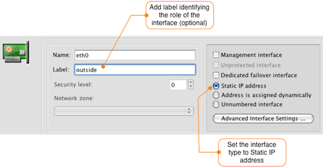
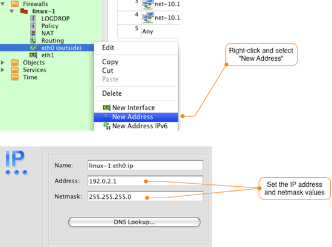
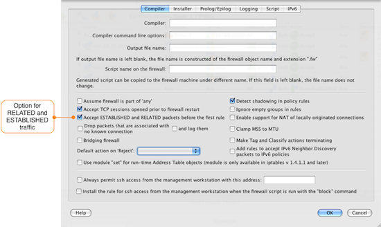
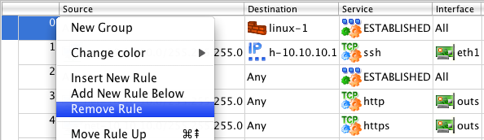
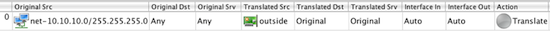
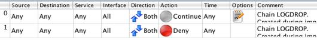

After the import is completed, the newly created firewall object will be
displayed in the object tree. If you expand the Objects system folder, as
shown in
After the firewall object is created in the object tree there are typically a few more steps required in order to be able to manage your firewall configuration using Firewall Builder.
There is not enough information in the iptables configuration for Firewall Builder to deterministically determine what interfaces and IP addresses are configured on the firewall. During the import if a rule contains either "-i" or "-o" interface references Firewall Builder will add the interface to the firewall object, but some interfaces may not be used in rules and therefore will not be detected.
In the example configuration that was imported for linux-1, both the eth0 and eth1 interfaces were used in the configuration, so the firewall object includes these interfaces. By default Firewall Builder marks these interfaces as Unnumbered.
To update the eth0 interface, double-click it to open it for editing. The figure below shows how to set a label for the interface and to identify that it should have a static IP address.
To add an IP address to the eth0 interface, right-click on the interface in the object tree and select New Address to add an IP address to the interface as shown in the figure below. Set the IP address and netmask to match your environment.
You may also need to add additional interfaces to the firewall object depending on what Firewall Builder was able to detect from the iptables rules. To add a new interface right-click the firewall object (in our example linux-1) and select New Interface. Add the interface name and label and set the type if necessary. The default type is Static IP address.
Just like in the previous example, to add a new IP address to any interfaces that you configure right-click on the interface in the object tree and select New Address.
During the import of the linux-1.conf file. Firewall Builder displayed a warning message that there were rules defined to allow RELATED and ESTABLISHED traffic to the firewall. Instead of having to explicitly have a rule for this, Firewall Builder has a configuration option controlling this behavior.
To view the configuration option controlling RELATED and ESTABLISHED traffic double-click on the firewall object and click on the Firewall Settings button in the Editor Panel. The dialog window will open with the Compiler tab selected. About halfway down the window is the checkbox that controls RELATED and ESTABLISHED traffic, which is enabled by default.
By default Firewall Builder is set to allow RELATED and ESTABLISHED traffic, so the imported rules 0 and 2 are not necessary. To remove these rules right-click the rule number and select Remove Rule as shown in the diagram below.
The specific rule numbers will vary based on your configuration, but the rules created for matching RELATED and ESTABLISHED traffic are identifiable by the use of the predefined ESTABLISHED objct in the Service field of the rule.
To view the imported NAT rules, double-click the NAT object under the linux-1 object in the tree. In this example, there is a single source NAT rule that translates inside addresses to the eth0 (outside) interface of the firewall.
Since this matches what we want, there is nothing to change in the NAT rules.
If your iptables configuration includes user-defined chains, Firewall Builder will create a new Policy object for each user chain and will use the Branch feature to jump from the main Policy to the user chain Policy. In our example linux-1.conf configuration there is a user chain called LOGDROP that has 2 rules. The first rule logs the packet and the second rule drops it.
To view the rules in the LOGDROP policy, double-click the LOGDROP policy object located under the linux-1 firewall object. This will open the rules in the Rules Editor as shown in the figure below.
Depending on your configuration you may be able to move some of the rules from a user defined chain Policy to the main Policy object.
Your firewall is now ready to be edited and maintained using Firewall Builder.